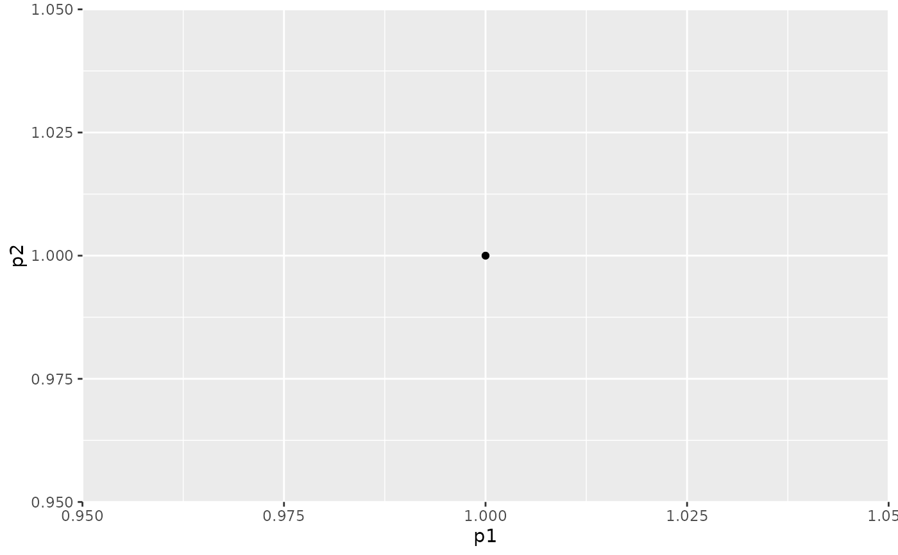

The ggplot theme for the package
Arguments
- ...
Further arguments parsed to
ggplot2::theme().
Examples
pts <- matrix(c(1,1), ncol = 2, byrow = TRUE)
plotHull2D(pts)

pts1 <- matrix(c(2,2, 3,3), ncol = 2, byrow = TRUE)
pts2 <- matrix(c(1,1, 2,2, 0,1), ncol = 2, byrow = TRUE)
ggplot2::ggplot() +
plotHull2D(pts2, drawPoints = TRUE, addText = "coord", drawPlot = FALSE) +
plotHull2D(pts1, drawPoints = TRUE, drawPlot = FALSE) +
gMOIPTheme() +
ggplot2::xlab(expression(x[1])) +
ggplot2::ylab(expression(x[2]))